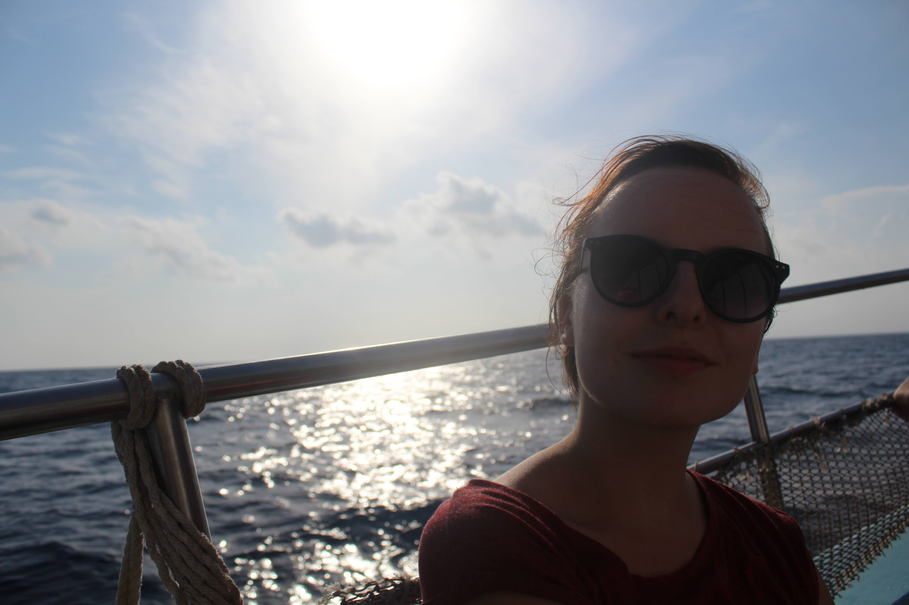

Moje notatki
Na osobnej podstronie umieszczam (a właściwie planuję umieszczać) notatki z nauki. Na bieżąco prowadzę je w
aplikacji Notion, którą polecam.
Do lektury notatek zapraszam o tutaj.
Hej! Mam na imię Ewelina. Uczę się Frontendu, zobaczymy jak mi pójdzie.
Na osobnej podstronie umieszczam (a właściwie planuję umieszczać) notatki z nauki. Na bieżąco prowadzę je w
aplikacji Notion, którą polecam.
Do lektury notatek zapraszam o tutaj.
W wolnych chwilach lubię czytać lub słuchać audiobooków, dlatego umieszczę tu kilka polecajek najświeższych z mojej perspektywy odkryć, a także listę propozycji znalezionych w internecie, do których jeszcze nie zajrzałam.